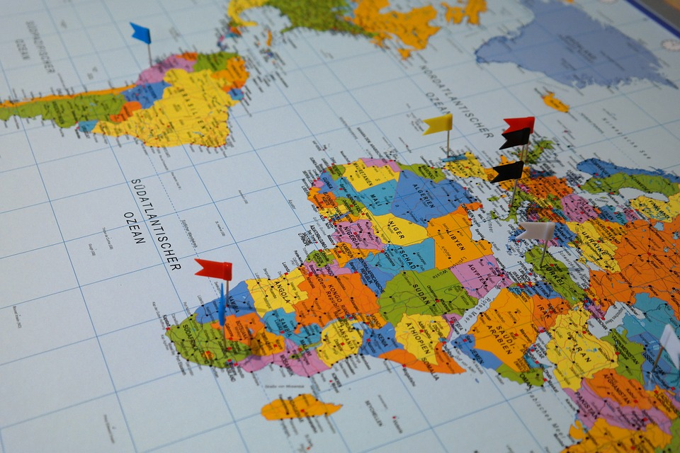

Traveler's Guide assists people who are looking to travel with tips, tricks, and destination ideas.
We want people to experience the world as much as they can with our help!
Our services are provided by travel professionals who have traveled since they were young and have developed a taste for culture.
We want people to experience the world as much as they can with our help!
Our services are provided by travel professionals who have traveled since they were young and have developed a taste for culture.